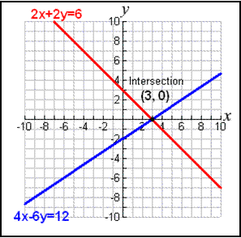
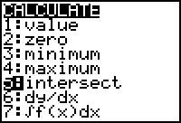
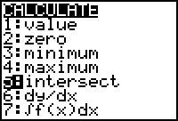
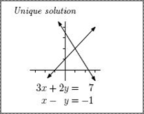
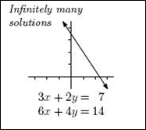
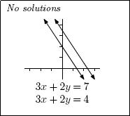

Solving Systems of Equations
System of Equations - more than 1 equation
Solution = point(s) of interection

Solve by
- Elimination
- Substitution
- Graphing
- Matrices
Elimination:
$\table 2x+2y=6; 4x-6y=12$
$\table -2(2x+2y=6) = -4x-4y=-12$
$\table -4x-4y=-12; +4x-6y=+12; 0x-10y=0; y=0$
$\table 2x+2(0)=6; 2x=6; x=3; \text"∴ the solution is "(3,0)$
$\table 2x+2y=6; 4x-6y=12$
$\table -2(2x+2y=6) = -4x-4y=-12$
$\table -4x-4y=-12; +4x-6y=+12; 0x-10y=0; y=0$
$\table 2x+2(0)=6; 2x=6; x=3; \text"∴ the solution is "(3,0)$
Substitution:
$\table 2x+2y=6; 2y=-2x+6; y=-x+3$
$\table 4x-6y=12; 4x-6(-x+3)=12; 4x+6x-18=12; 10x=30; x=3$
$\table y=-x+3; y=-(3)+3; y=0; ∴ \text" the solution is "(3,0)$
$\table 2x+2y=6; 2y=-2x+6; y=-x+3$
$\table 4x-6y=12; 4x-6(-x+3)=12; 4x+6x-18=12; 10x=30; x=3$
$\table y=-x+3; y=-(3)+3; y=0; ∴ \text" the solution is "(3,0)$
Graphing:
$\table 2x+2y=6; 2y=-2x+6; y=-x+3$
$\table 4x-6y=12; -6y=-4x+12; y=2/3 x-2$
Plug into $y=$ screen, graph, go to calculate functions

$\table 2x+2y=6; 2y=-2x+6; y=-x+3$
$\table 4x-6y=12; -6y=-4x+12; y=2/3 x-2$
Plug into $y=$ screen, graph, go to calculate functions

System of Equations are either:
| Consistent | Inconsistent | |
|---|---|---|
| only 1 solution | infinitely many solutions (lines coincide) | no solutions |
|  |  |  |
| Consistent |
|---|
| only 1 solution |
| Consistent |
| infinitely many solutions (lines coincide) |
| Inconsistent |
| no solutions |
Homework Video